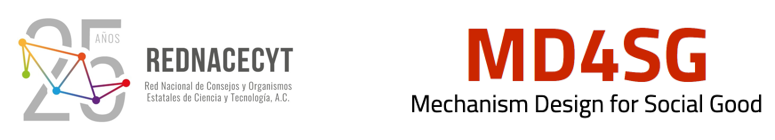
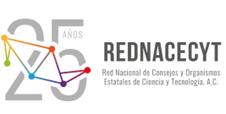

REDNACECYT-MD4SG Verano de la Ciencia

Versión en Inglés
Descripción
El objetivo del Programa Verano de Ciencias es apoyar a mujeres estudiantes de diversas comunidades indígenas en México en el diseño y ejecución de proyectos de investigación dirigidos a mejorar sus comunidades. Las participantes del programa son estudiantes de diversos niveles de educación superior, y preparan propuestas con el objetivo de utilizar diversas metodologías de investigación para abordar problemas relevantes en sus comunidades y proponer soluciones. Las estudiantes que son aceptadas en el programa trabajan con mentoras y mentores de MD4SG en sus proyectos durante el verano. El resultado final de esta colaboración es el desarrollo de un póster académico y la presentación del póster en la Conferencia de la Asociación de Maquinaria Computacional (ACM) sobre Equidad y Acceso en Algoritmos, Mecanismos y Optimización (EAAMO) por parte de las estudiantes.
En la edición 2022 del programa, el "Verano de Ciencia COPOCYT-MD4SG", aceptó a 8 estudiantes indígenas mujeres de la región de la Huasteca Potosina en San Luis Potosí, México. Las estudiantes presentaron sus pósters académicos en la EAAMO '22, que tuvo lugar en la Universidad George Mason en los Estados Unidos. Las estudiantes provenían de comunidades hablantes de Tének y Náhuatl, y sus proyectos abarcaron temas muy diversos, incluyendo la preservación de la lengua/cultura indígena, vivienda asequible, y acceso equitativo a la atención médica para comunidades indígenas.
El Programa de Verano de Ciencias edición 2023 es una colaboración entre la iniciativa sobre Diseño de Mecanismos para el Bien Social (MD4SG) y la Red Nacional de Consejos y Organizaciones Estatales de Ciencia y Tecnología (REDNACECYT). Logrando la extensión del programa a 7 estados en México gracias a la colaboración de 7 consejos estatales miembros de la REDNACECYT.
Nos emociona anunciar que este año hemos aceptado en total a 21 estudiantes mujeres de los estados de Michoacán, Sinaloa, Chihuahua, Estado de México, Veracruz, Puebla y San Luis Potosí. Las estudiantes son miembros de 11 comunidades indígenas en total (Cuanajo, Purépecha, Mixteco, Tepehuán, Rarámuri, Mazahua, Zapoteca, Náhuatl, Tének, Mazateca y Zoque). Nuevamente, los proyectos propuestos por estas estudiantes abarcan una amplia gama de temas, incluyendo (entre otros): comprender y mejorar la toma de decisiones colectivas en comunidades indígenas, preservar la cultura y la identidad indígena, proporcionar atención médica y vivienda equitativas, y comprender las percepciones de la política ambiental en las comunidades indígenas locales.
Cronograma/Programa
- Junio - Julio: Publicación de la convocatoria por parte de la REDNACECYT
- Finales de julio: Publicación y notificación de las propuestas aceptadas para el Verano de Ciencias
- Principios de agosto: Las estudiantes son asignadas con mentoras y mentores de MD4SG
- Principios de agosto - Mediados de octubre: Las estudiantes se reúnen regularmente con las mentoras y mentores de MD4SG y preparan el póster académico para la presentación en la EAAMO '23
- Mediados de septiembre: Sesión informativa con los oficiales del programa Fullbright sobre oportunidades de becas en los Estados Unidos
-
30 de octubre - 1 de noviembre: Participación en EAAMO '23 en la Universidad de Boston, Estados Unidos.
- Fecha/hora de la sesión de pósters por determinar
-
2 de noviembre: Taller del Verano de Ciencia que se llevará a cabo en la Universidad de Harvard, Estados Unidos
- Los eventos incluyen: seminarios y tutoriales de investigadoras e investigadores de la Universidad de Harvard, visita guiada por la Universidad, visitas a laboratorios de investigación y eventos sociales con estudiantes y grupos estudiantiles. Más detalles serán anunciados más cerca de la fecha.
Cohorte 2023
María Guadalupe García Alonso
Estado: MichoacánAdscripción: Estudiante de Maestría en Desarrollo Rural, Universidad Autónoma de Chapingo
Resumen del Proyecto: Percepción y participación social en los programas de restauración ambiental de la cuenca del Lago de Pátzcuaro, Michoacán
Supervisor: Diego M. Macall
Comunidad Indígena: Cuanajo
Viridiana Camacho Pánfilo
Estado: MichoacánAdscripción: En proceso de admisión al programa de posdoctorado
Resumen del Proyecto: Los purépechas y el papel del padre de familia. Los actores y la práctica política de los pueblos purépechas de Michoacán en la primera mitad del siglo XIX.
Supervisor: Francisco Marmolejo-Cossio
Comunidad Indígena: Purépecha
María Rosario Niniz Silva
Estado: MichoacánAdscripción: Estudiante de doctorado en Ciencias Sociales en Estudios Rurales en El Colegio de Michoacán
Resumen del Proyecto: Discapacidad adquirida, dinámicas familiares y reposicionamiento de género en un contexto de migración transnacional. El caso de los migrantes purépechas en los Estados Unidos.
Supervisor: Agnes Medinaceli
Comunidad Indígena: Purépecha
Ofelia López Mejía
Estado: SinaloaAdscripción: Estudiante postdoctoral en Ciencias Jurídicas en la Universidad Autónoma de Sinaloa
Resumen del Proyecto: Mujeres indígenas y representación política en el municipio de Elota, Sinaloa
Supervisor: Flor Gerardou and Blanca Moran
Comunidad Indígena: Mixteco
Rosa Adriana Rivas Castillo
Estado: ChihuahuaAdscripción: Estudiante de licenciatura con intención de cursar una maestría el próximo año
Resumen del Proyecto: Impacto de la violencia en la salud mental de las mujeres rarámuris de la Sierra Tarahumara en Chihuahua
Supervisor: Alejandro Quiroz
Comunidad Indígena: Tarahumara y Tepehuan
Argelia Contreras Aguirre
Estado: ChihuahuaAdscripción: Admitida en la maestría en Educación Intercultural de la Universidad Pedagógica Nacional de Chihuahua
Resumen del Proyecto: Abordar algunas necesidades en torno a la educación artística
Supervisor: Cristina Gorrostieta
Comunidad Indígena: Rarámuri
Alma Benita Cruz González
Estado: Estado de MéxicoAdscripción: Estudiante de maestría en Medicina Social
Resumen del Proyecto: Medicina tradicional en los servicios de salud de CESSA, Amealco, a través de la salud intercultural.
Supervisor: Alicia Prieto Langarica
Comunidad Indígena: Mazahua
Flor Ángel Pérez Sánchez
Estado: VeracruzAdscripción: En proceso de admisión a una Maestría en Ecología Tropical en el CITRO
Resumen del Proyecto: Percepción socioambiental del proyecto Corredor Interoceánico del Istmo de Tehuantepec en el tramo Ubero a Mogoñe, Oaxaca.
Supervisor: Tilsa Oré Mónago
Comunidad Indígena: Zapoteca
Yazmin Cruz Cruz
Estado: VeracruzAdscripción: Estudiante de maestría en Ingeniería Administrativa en TNM
Resumen del Proyecto: Desarrollo de una aplicación móvil y análisis con minería de datos para la detección del espectro autista
Supervisor: Santiago Correa Cardona
Comunidad Indígena: Náhuatl
Yésica Gómez Hernández
Estado: PueblaAdscripción: En proceso de admisión al Doctorado en Investigación Educativa en la Universidad Autónoma de Tlaxcala
Resumen del Proyecto: Ser mujer, indígena y científica: un análisis de trayectorias académicas y profesionales basado en condiciones étnicas, lingüísticas y de género.
Supervisor: Dr. Angel Garcia
Comunidad Indígena: Náhuatl
Edna Marlene Martínez Hernández
Estado: San Luis PotosíAdscripción: Estudiante de la Maestría en Salud Pública en la UANL
Resumen del Proyecto: Barreras y desafíos de comunicación en la educación sanitaria sobre COVID-19 en comunidades indígenas de la Huasteca Potosina.
Supervisor: Michelle González Amador
Comunidad Indígena: Tének
Leydi Rojas Martínez
Estado: San Luis PotosíAdscripción: Estudiante de la Maestría en Salud Pública en la UANL
Resumen del Proyecto: Acceso a servicios de salud durante la pandemia de COVID-19 en comunidades indígenas de la Huasteca Potosina.
Supervisor: Salvador Ruiz Correa
Comunidad Indígena: Tének
Anai Domingo Martínez
Estado: San Luis PotosíAdscripción: Estudiante de la Maestría en Salud Pública en la UASLP
Resumen del Proyecto: An met'antalab, ¿jant'ey a exlal?: evaluación de una intervención educativa para adolescentes indígenas sobre el nivel de conocimiento acerca del Virus del Papiloma Humano.
Supervisor: Lucas Gomez Tobon
Comunidad Indígena: Tének
María Guadalupe Márquez Hinojosa
Estado: San Luis PotosíAdscripción: Estudiante de la Maestría en Salud Pública en la UASLP
Resumen del Proyecto: Nivel de conocimiento sobre el VPH en una población indígena de habla náhuatl después de una intervención educativa.
Supervisor: Dra. Areli Vázquez Juárez
Comunidad Indígena: Tének
Iridiana Salinas Hernández
Estado: San Luis PotosíAdscripción: Estudiante de la Maestría en Contabilidad en la UANL
Resumen del Proyecto: La desigualdad económica como obstáculo para una mejor calidad de vida en las familias de la comunidad de Itztacapa Xilitla, S.L.P.
Supervisor: Imelda Flores Vazquez
Comunidad Indígena: Náhuatl
Idalia Rojas Martínez
Estado: San Luis PotosíAdscripción: En proceso de admisión a la especialidad en enfermería clínica avanzada
Resumen del Proyecto: Inclusión de enfermeras hablantes de lengua materna para la atención de los pueblos indígenas de la Huasteca Potosina en el segundo y tercer nivel de atención.
Supervisor: Alejandro Robinson-Cortés
Comunidad Indígena: Tének
Claudia Martínez Martínez
Estado: San Luis PotosíAdscripción: Estudiante de la Maestría en Relaciones Internacionales en la UANL
Resumen del Proyecto: La percepción de las mujeres indígenas de la Zona Huasteca en la Región Tének, S. L. P. sobre el acceso a la educación superior en México.
Supervisor: Rubén Martínez Cárdenas
Comunidad Indígena: Tének
María del Rosario Félix Gaspar
Estado: San Luis PotosíAdscripción: Graduada de una maestría en enfermería perinatal en la Universidad Autónoma del Estado de México, con la intención de cursar un doctorado en ciencias de la salud en la misma institución.
Resumen del Proyecto: Plan de intervención educativa para brindar atención humanizada durante el parto.
Supervisor: Alejandro Robinson-Cortés
Comunidad Indígena: Náhuatl
Adriana Santiago Marcelino
Estado: San Luis PotosíAdscripción: Maestría en Derechos Humanos en la UASLP
Resumen del Proyecto: Evaluación de los derechos de los niños en la educación y la salud en la comunidad indígena
Supervisor: Rubén Martínez Cárdenas
Comunidad Indígena: Tének
Celeste Cristal Flores Cuevas
Estado: San Luis PotosíAdscripción: Graduada de la maestría en manejo sustentable del agua en El Colegio de San Luis
Resumen del Proyecto: Entre la comunidad y la gestión cultural del agua en Loma Chapultepec, Huautla, Oaxaca
Supervisor: Egidio Tentori
Comunidad Indígena: Mazateca
Martha Yadira Jiménez Estrada
Estado: ChiapasAdscripción: Estudiante de Maestría en Estudios Interculturales
Resumen del Proyecto: A través de mi proyecto "Oralidad: Patrimonio Biocultural de los Zoques", pretendo crear historias bilingües en Zoque y Español, utilizando formatos escritos y audiovisuales, para preservar las tradiciones orales de nuestra comunidad y fomentar el aprendizaje del idioma, enriqueciendo así nuestro patrimonio cultural.
Supervisor: María Ana Chavana Villalobos y Jorge García Ponce
Comunidad Indígena: Zoque
Equipo Organizador y Mentores
El equipo de organizadores y mentores que forman parte del equipo de MD4SG que facilita el programa Verano de Ciencia provienen de diversas instituciones internacionales.- Dr. Francisco Marmolejo Cossío, Universidad de Harvard
- Dra. Tilsa Ore Monago, Rice University
- Dra. Imelda Flores Vazquez, Econometrica Inc.
- Michelle González-Amador, UNU-MERIT y Universidad de Maastricht
- Dr. Rubén Martínez Cárdenas, Universidad de York
- Dr. Alejandro Robinson-Cortés, Universidad de Exeter
- Prof. Salvador Ruiz Correa, Instituto Potosino de Investigación Científica y Tecnológica A.C. (IPICYT)
- Prof. Alicia Prieto Langarica, Universidad Estatal de Youngstown
- Diego M. Macall, Universitat Autònoma de Barcelona
- Prof. Areli Vázquez Juárez, Universidad Nacional Autónoma de México (UNAM)
- Agnes Medinaceli, Universidad de Oxford
- Jorge Garcia Ponce, Universidad de Harvard
- Dr. Egidio Tentori, Universidad Cornell
- Dr. Flor Gerardou, Universidad de Falmouth
- Dra. Blanca Guizar Moran, Universidad de Sunderland
- Dr. Angel Urbina Garcia, Universidad de Hull
- Dra. Eleanor Brown, Universidad de York
- Dra. María Ana Chavana Villalobos, Universidad de York
- Dr. Santiago Correa Cardona, Universidad de Massachusetts
- Dr. Cristina Gorrostieta, Cogito
- Prof. Alejandro Quiroz, Universidad de Essex
- Lucas Gomez Tobon, Quantil
REDNACECYT
La Red Nacional de Consejos y Organismos Estatales de Ciencia y Tecnología, A.C., REDNACECYT, es una Asociación Civil constituida el 23 de noviembre de 1998 en la ciudad de Guanajuato por Coahuila, Durango, Guanajuato, Michoacán, Querétaro, San Luis Potosí, Sinaloa y Tamaulipas.
Su creación ha sido de gran relevancia en la historia del fomento a la ciencia, la tecnología y la innovación en México. Se trata no sólo de la constitución de una organización que agrupa y da cohesión a un conjunto de Organismos con objetivos distintos pero relacionados con la materia de ciencia, tecnología e innovación, sino también, por la disposición de las entidades federativas, a desempeñar un papel proactivo en el diseño e implementación de las políticas de fomento al conocimiento y su aplicación al desarrollo.
Entre sus finalidades originales, la Red se planteó para constituir un foro permanente de discusión de programas y acciones que fomentan la investigación científica, el desarrollo tecnológico y la innovación, desde las entidades federativas de la República, a través de la interacción de sus integrantes, así como la coordinación con los sectores académico, gubernamental, social y empresarial en lo que se refiere a políticas públicas de la materia.
En los primeros momentos de su historia, REDNACECYT, centró su actuación en la discusión de temas de alcance y relevancia nacional, particularmente en la legislación federal y estatal en materia de ciencia y tecnología. Muy pronto, la federalización del fomento a la actividad científica, tecnológica y de innovación se convirtió en el centro de su acción pública, manteniendo hacia el interior de la organización una permanente actividad de intercambio de mejores prácticas y de impulso a la creación de nuevos consejos y organismos homólogos.
Desde su creación, la REDNACECYT ha mantenido un crecimiento constante en el número de asociados, ha participado en los más diversos foros, ya sea con organismos gubernamentales de los poderes legislativo y ejecutivo, federales y estatales, así como de organismos no gubernamentales.
A 20 años de su fundación, en un contexto nacional e internacional de constante cambio, ante nuevos retos que el propio crecimiento de la organización ha generado la REDNACECYT se consolida como una organización que articula a los actores del sector científico, tecnológico y de innovación.

Principales colaboradores REDNACECYT
Las siguientes personas de la red REDNACECYT han desempeñado un papel fundamental en el establecimiento del Verano de Ciencias en colaboración con la iniciativa MD4SG, y en la obtención de apoyo financiero para que nuestras estudiantes asistan a conferencia EAAMO.
- Dra. Rosalba Medina Rivera
- Directora de la REDNACECYT
- Directora del Consejo Potosino de Ciencia y Tecnología Potosí (COPOCYT)
- Mtra. Claudia Llamas Batres
- Subdirectora de Capacitación y Asistencia Técnica del COPOCYT
- Mtra. Amanda Karina Contreras Quijada
- Subdirectora de Análisis y Prospectiva COPOCYT
- Mtro. Raúl Varela Tena
- Director del Instituto de Innovación y Competitividad del Estado de Chihuahua (I2C)
- Dr. Bernardo Jorge Almaraz Calderón
- Director del Consejo Mexiquense de Ciencia y Tecnología (COMECYT)
- Dra. Alejandra Ochoa Zarzosa
- Directora del Instituto de Ciencia, Tecnología e Innovación del Estado de Michoacán (ICTI)
- Dr. Victoriano Gabriel Covarrubias Salvatori
- Director del Consejo de Ciencia y Tecnología del Estado de Puebla (CONCYTEP)
- Dr. Carlos Karam Quiñones
- Director de la Coordinación General para el Fomento a la Investigación Científica y la Innovación del Estado de Sinaloa (CONFÍE)
- Dr. Darwin Mayorga Cruz
- Director del Consejo Veracruzano de Investigación Científica y Desarrollo Tecnológico (COVEICYDET)